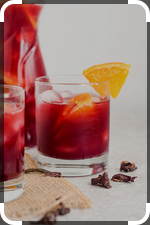

Sobolo

Details
Sobolo/Bissup/Zobo is a popular beverage in Ghana and
other West African Countries. It is made from dried
Hibiscus leaves, mixed with ginger and other natural
ingredients for a spicy yet tasty drink that has many
health benefits.
Ingredients
- 1 Pineapple
- 2 large thumbs - 1/3 cup of ginger peeled
- 1 cup dates pitted
- Sugar to taste
- 15 grains of selim
- 7 African nutmeg
- 2 tbsp cloves
- 2 dried chillies
- 1 tbsp black pepercorn
- 1 tbsp grains of paradise
- 2 cups hibiscus
- 16 cups of water
Steps
- Clean the pineapple by soaking in a water and vinegar solution for 2-3 minutes
- While the pineapple is soaking, soak the dates in warm water then drain when nice and soft
- Pluck a few leaves from the pineapple crown and peel the pineapple
- Cut the pineapple fruit in chunks removing the core
- In a blender, blend the pineapple fruit with the ginger, spices and dates till smooth
- In a pot, add the pineapple leaves, skin, blended mixture, and spices with 10 cups of water and bring to a boil. Do not cover the pot otherwise it will splash
- One the water has come to a boil, add the sorrel and bring the heat down to allow the mixture to steep at a rolling boil
- Let it steep for at least 30 minutes, then turn off the stove
- Add sugar to taste, I added ~ 3/4 cup of brown sugar, adding 1/4 at a time and tasting to make sure I was getting the right sweetness
- Let it cool till the drink is completely cool (room temperature)
- Strain drink with a fine mesh strainer. if you have the energy, you can also use a nut milk bag to really get all the bits.
- Bottle and keep in the fridge